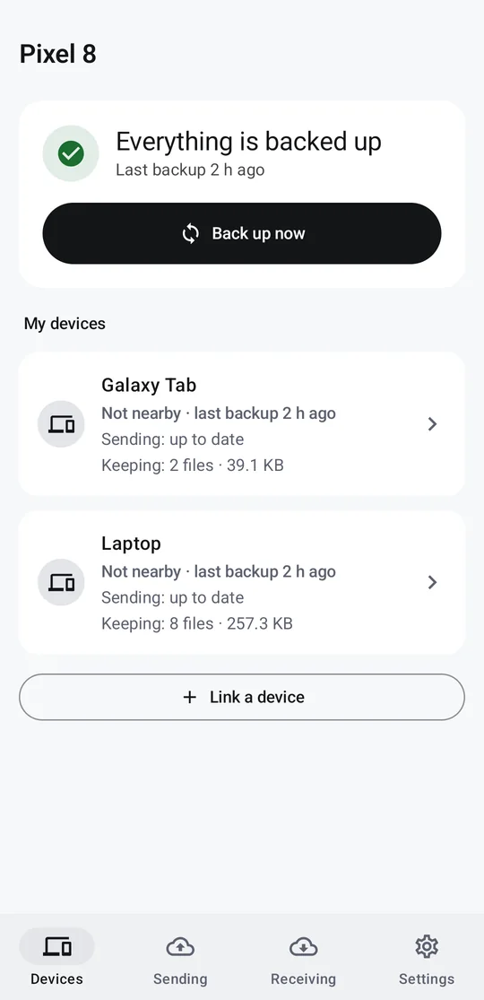
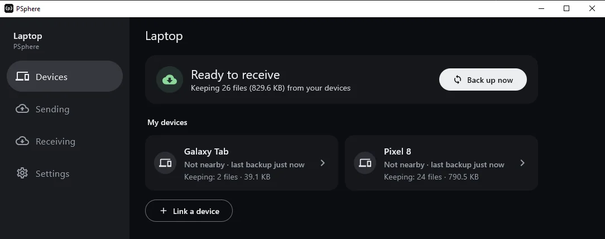
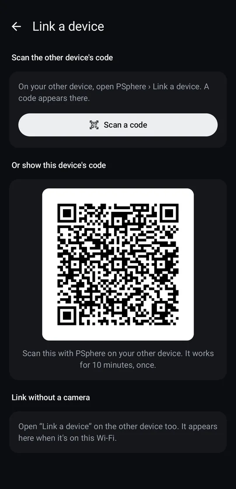
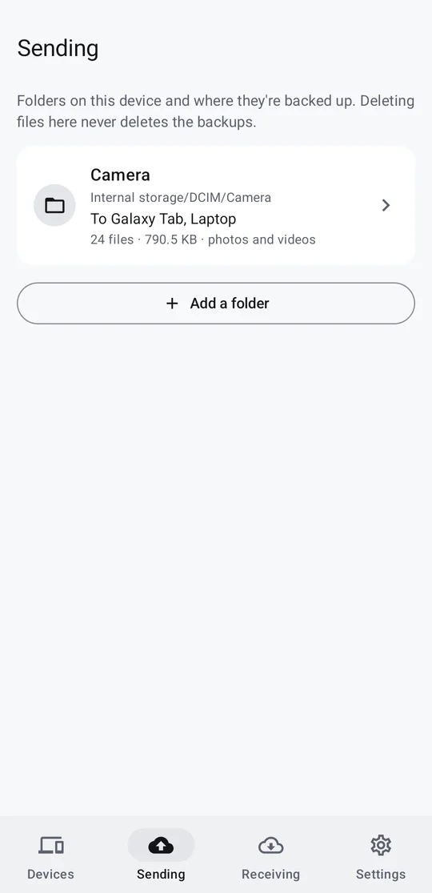

Backup between your own devices
Your devices are the cloud.
PSphere backs up your phone, tablet and Windows laptop to each other over your home Wi-Fi. No server, no account, no subscription. Your photos never leave home.
Version 2.1, early development · Install guide · All releases


The Windows app, keeping backups from a phone and a tablet. Real screens from version 2.1.
How it works
Link once. After that, it looks after itself.
Whenever two of your devices are on the same Wi-Fi, they send each other only what's missing.
-
Link your devices
Scan a QR code, or compare a 6-digit code on both screens. You do this once for each pair.

-
Pick folders and where they go
Choose a folder, like Camera, and tick the devices that should keep a copy.

-
Backups run by themselves
A device that was off catches up later, even from another device that already has a copy. Big videos resume where they stopped.
What works today
Version 2.1, and what's next
PSphere is in early development. The Android and Windows apps do the backing up now; one photo library across your devices comes next.
- Several folders per deviceEach one goes to the devices you choose.Available
- Every device sends and receivesPhone, tablet and Windows laptop. Each picks where the backups it keeps are saved.Available
- Backup, not mirrorDeleting a file never deletes its copies. A changed file keeps its old version for 30 days.Available
- Catch up from any copyA device that was off catches up from any device that has the files.Available
- Windows app in the trayRuns quietly and can start with Windows.Available
- One photo librarySee every device's photos on any device.Next
- Free up spaceRemove photos from your phone once they're safe elsewhere.Next
Privacy
Built so your photos never need to leave home
Every connection is encrypted, and we tested it on real devices. See the security test.
- Stays at homeDevices talk directly over your Wi-Fi. There's no PSphere server, no cloud and no account, and nothing goes to the internet.
- Only your devicesEvery connection is encrypted, and each device checks that the other is one you linked. Other PSphere devices on the same Wi-Fi are ignored.
- Nothing lost silentlyEvery file is checked against its SHA-256 fingerprint when it arrives.
- Open sourceAll of it is on GitHub under the GNU AGPL-3.0, so anyone can check what it does.
Updates
What's new
Every change as it lands on GitHub. This list checks for new ones while the page is open.
- newCheck for updates, in Settings
0dc6318 - fixPrefer TLS 1.3, and fix one-sided linking
fb4daa8 - newLink several devices in a row, with a clearer Linked banner
3ca1403 - newNew look: the (p) icon and Mono colours
9cb9ee4
Nothing of this kind among the latest changes.
Questions
Frequently asked
Do I need a server or an account?
No. Install PSphere on two or more of your devices, link them, and they back each other up over your Wi-Fi. Nothing else is needed.
Where do backups from my other devices end up?
In the backup location you choose on each device, for example D:\PSphere Backups on a laptop or Pictures/PSphere on a phone. Inside it, each device gets its own folder, like Phone/Camera.
If I delete a photo on my phone, is the backup deleted?
No. PSphere is a backup, not a mirror. Copies on your other devices stay where they are.
Does it work when I'm away from home?
Your devices need to be on the same Wi-Fi. Backups wait until they are, then catch up with only what changed.
Can it be my only backup?
Not yet. PSphere is in early development. Keep another copy of photos you can't afford to lose until it reaches a stable release.